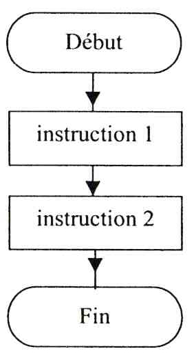
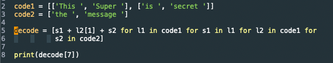
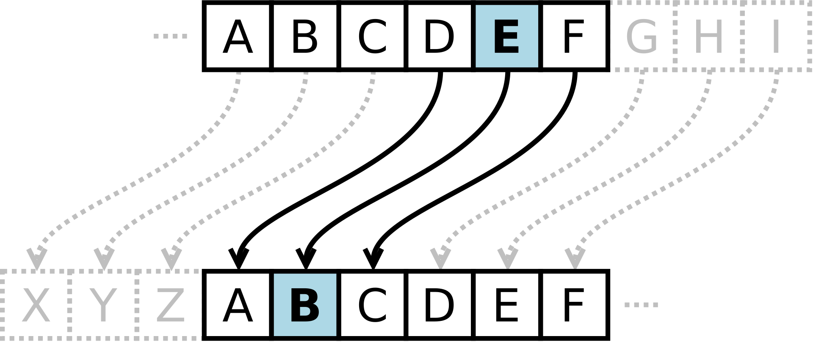
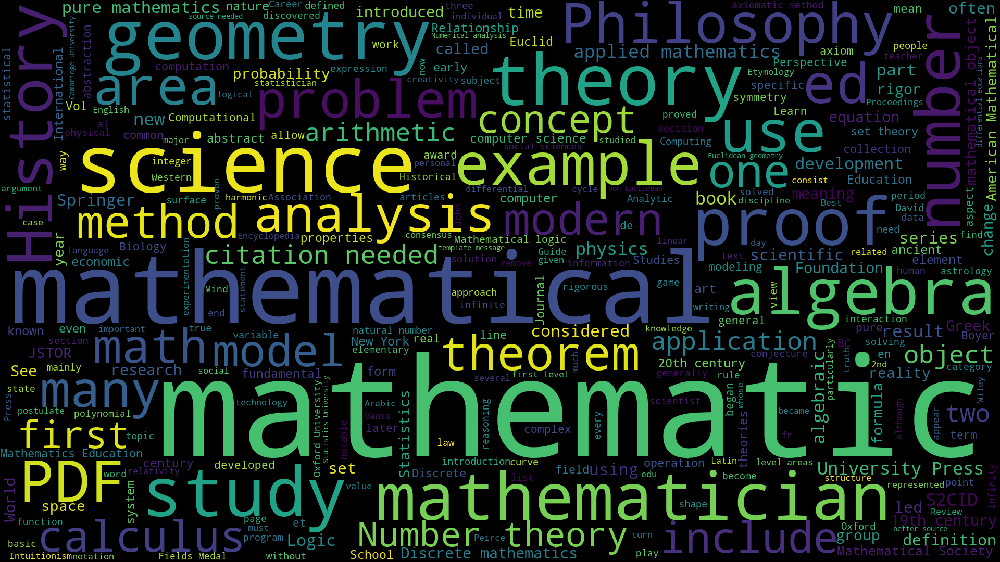
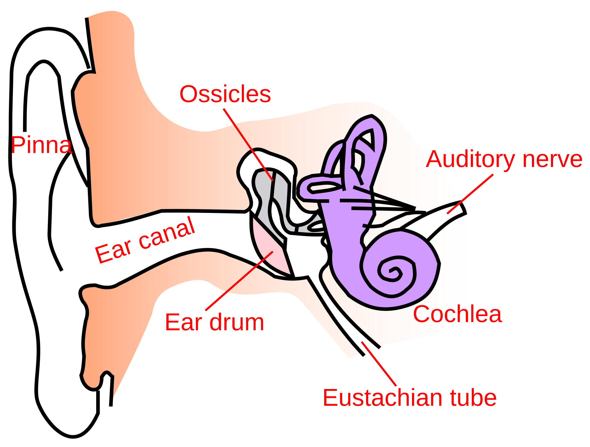
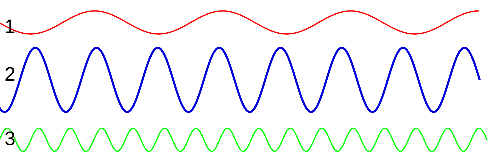
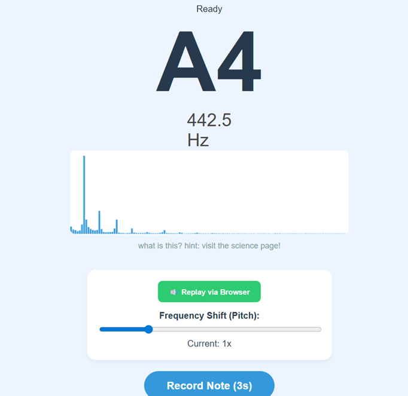

Ready
--
0.0 Hz
Current: 1.0x (Normal)
How do computers understand instructions?
Learn Python basics
Try this programming task!
Discover the mathematics behind sound, frequency and encryption!
Learn to create secret messages...
Understand frequency
Perform frequency calculations
Explore the physics behind sound
How exactly do we hear sound?
How sound travels
Learn how to use and understand the tuner

An algorithm is a precise set of step-by-step instructions used to solve a problem or achieve a goal. Computers are not smart on their own. They need a clear sequence,meaning the instructions must be followed in the exact order they are written, from top to bottom.
What are the step-by-step instructions for baking a cake?

When you write an algorithm in a language a computer understands, it becomes a program. At KS2, we learn to transition from visual blocks to text programming languages like Python. Programs use "inputs" (like clicking a button) and turns them into "outputs" (like playing back audio).
If there is an error in our code order or typing, the program fails. Finding and fixing these mistakes is called debugging!
Imagine you are designing a digital musical instrument. Write a simple text algorithm to handle button press inputs and audio outputs:

A Caesar Cipher is an ancient encryption method where you hide secret messages by shifting the letters of the alphabet by a certain number. This is an amazing way to practice simple addition, subtraction, and patterns.
If your secret key pattern is "+3 positions", then the letter A becomes D, B becomes E, and C becomes F. To decode the secret message and read it normally, you just do the inverse operation: subtract 3 positions!
Music is built entirely out of mathematical patterns! An octave is the distance between one musical note and the next highest or lowest version of it (like moving from low C to high C). In KS2 Maths, we explore doubling and number scaling, and that is exactly how an octave works.
When you jump up by one octave, you multiply the sound frequency number by 2. When you drop down an octave, you divide the frequency by 2!

Use your multiplication, doubling, and halving skills to solve these musical problems:

In KS2 Science, you learn all about the human body and our senses. Sound vibrations travel through the air and hit our ears. The outer ear channels the vibrations down the ear canal until they hit a thin layer of skin called the eardrum, causing it to vibrate too!
These mechanical vibrations are turned into electrical signals that shoot up to your brain. Your brain translates those signals instantly so you can recognise if a sound is a dog barking, a cat meowing, or a musical note!

According to the Year 4 KS2 Science curriculum, sound is made when an object vibrates. These vibrations travel through a medium (like solid, liquid, or gas air molecules) to reach our ears. The size and speed of the wave changes how it sounds.
Pitch is how high or low a sound is. Fast vibrations make high-pitched sounds with a high frequency (measured in Hertz, or waves per second). Slow vibrations make low-pitched sounds with a low frequency!

Disclaimer: The tuner does not permanently save any information. All recordings are deleted after use.
What is the blue graph showing? It is the sound you played into the microphone! The graph shows what the sound is made up of.
For example, if you play a musical note on a piano into the microphone, you will see spikes on the graph. These are called harmonics, and they are what musical notes are made up of!
Let's use the live tuner to investigate sound features, just like a real scientist: